Topic 16: Practicing AB Testing with Movies#
onl01-dtsc-ft-022221
04/02/21
## Importing our study group functions
%load_ext autoreload
%autoreload 2
import sys
py_folder = "../../py_files/"
sys.path.append(py_folder)
import functions_SG as sg
import pandas as pd
import matplotlib.pyplot as plt
import seaborn as sns
from scipy import stats
plt.style.use('seaborn-talk')
Testing Hypotheses About Movies#
df = pd.read_csv('../topic_12_statistical_distributions/joined_movie_data_for_sg.csv')
display(df.head())
df.info()
| id | release_date | movie | production_budget | domestic_gross | worldwide_gross | tconst | primary_title | original_title | start_year | runtime_minutes | genres | revenue-domestic | revenue-worldwide | lost_money | roi-domestic | roi-worldwide | release_month | |
|---|---|---|---|---|---|---|---|---|---|---|---|---|---|---|---|---|---|---|
| 0 | 2 | 2011-05-20 | Pirates of the Caribbean: On Stranger Tides | 410600000.0 | 241063875.0 | 1.045664e+09 | tt1298650 | Pirates of the Caribbean: On Stranger Tides | Pirates of the Caribbean: On Stranger Tides | 2011 | 136.0 | Action,Adventure,Fantasy | -169536125.0 | 6.350639e+08 | True | -41.289850 | 154.667286 | 5 |
| 1 | 3 | 2019-06-07 | Dark Phoenix | 350000000.0 | 42762350.0 | 1.497624e+08 | tt6565702 | Dark Phoenix | Dark Phoenix | 2019 | 113.0 | Action,Adventure,Sci-Fi | -307237650.0 | -2.002376e+08 | True | -87.782186 | -57.210757 | 6 |
| 2 | 4 | 2015-05-01 | Avengers: Age of Ultron | 330600000.0 | 459005868.0 | 1.403014e+09 | tt2395427 | Avengers: Age of Ultron | Avengers: Age of Ultron | 2015 | 141.0 | Action,Adventure,Sci-Fi | 128405868.0 | 1.072414e+09 | False | 38.840250 | 324.384139 | 5 |
| 3 | 7 | 2018-04-27 | Avengers: Infinity War | 300000000.0 | 678815482.0 | 2.048134e+09 | tt4154756 | Avengers: Infinity War | Avengers: Infinity War | 2018 | 149.0 | Action,Adventure,Sci-Fi | 378815482.0 | 1.748134e+09 | False | 126.271827 | 582.711400 | 4 |
| 4 | 9 | 2017-11-17 | Justice League | 300000000.0 | 229024295.0 | 6.559452e+08 | tt0974015 | Justice League | Justice League | 2017 | 120.0 | Action,Adventure,Fantasy | -70975705.0 | 3.559452e+08 | True | -23.658568 | 118.648403 | 11 |
<class 'pandas.core.frame.DataFrame'>
RangeIndex: 3467 entries, 0 to 3466
Data columns (total 18 columns):
# Column Non-Null Count Dtype
--- ------ -------------- -----
0 id 3467 non-null int64
1 release_date 3467 non-null object
2 movie 3467 non-null object
3 production_budget 3467 non-null float64
4 domestic_gross 3467 non-null float64
5 worldwide_gross 3467 non-null float64
6 tconst 3467 non-null object
7 primary_title 3467 non-null object
8 original_title 3467 non-null object
9 start_year 3467 non-null int64
10 runtime_minutes 3056 non-null float64
11 genres 3467 non-null object
12 revenue-domestic 3467 non-null float64
13 revenue-worldwide 3467 non-null float64
14 lost_money 3467 non-null bool
15 roi-domestic 3467 non-null float64
16 roi-worldwide 3467 non-null float64
17 release_month 3467 non-null int64
dtypes: bool(1), float64(8), int64(3), object(6)
memory usage: 464.0+ KB
df.isna().sum()
id 0
release_date 0
movie 0
production_budget 0
domestic_gross 0
worldwide_gross 0
tconst 0
primary_title 0
original_title 0
start_year 0
runtime_minutes 411
genres 0
revenue-domestic 0
revenue-worldwide 0
lost_money 0
roi-domestic 0
roi-worldwide 0
release_month 0
dtype: int64
df.dropna(subset=['runtime_minutes'],inplace=True)
df.isna().sum()
id 0
release_date 0
movie 0
production_budget 0
domestic_gross 0
worldwide_gross 0
tconst 0
primary_title 0
original_title 0
start_year 0
runtime_minutes 0
genres 0
revenue-domestic 0
revenue-worldwide 0
lost_money 0
roi-domestic 0
roi-worldwide 0
release_month 0
dtype: int64
df_ = df.copy()
Q1: Do movies with longer run times generate more or less revenue than shorter run times?#
clean_df = df[df['runtime_minutes'] > 60]
sg.plot_distribution(clean_df['runtime_minutes'],boxplot=False, verbose=False)
/opt/anaconda3/envs/learn-env-new/lib/python3.8/site-packages/seaborn/_decorators.py:36: FutureWarning: Pass the following variable as a keyword arg: x. From version 0.12, the only valid positional argument will be `data`, and passing other arguments without an explicit keyword will result in an error or misinterpretation.
warnings.warn(
(<Figure size 720x576 with 1 Axes>,
array([<AxesSubplot:title={'center':'Distribution of runtime_minutes'}, xlabel='runtime_minutes', ylabel='Density'>,
<AxesSubplot:xlabel='runtime_minutes'>], dtype=object))
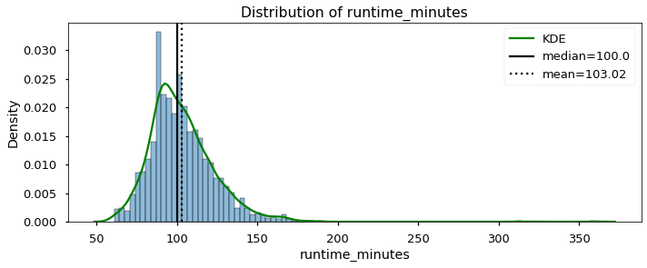
clean_df['runtime_minutes'].describe()
count 2788.000000
mean 103.022597
std 20.271087
min 61.000000
25% 90.000000
50% 100.000000
75% 113.000000
max 360.000000
Name: runtime_minutes, dtype: float64
median = clean_df['runtime_minutes'].median()
median
100.0
# df[df['runtime_minutes'] == median]
df = clean_df.copy()
df
| id | release_date | movie | production_budget | domestic_gross | worldwide_gross | tconst | primary_title | original_title | start_year | runtime_minutes | genres | revenue-domestic | revenue-worldwide | lost_money | roi-domestic | roi-worldwide | release_month | runtime_groups | |
|---|---|---|---|---|---|---|---|---|---|---|---|---|---|---|---|---|---|---|---|
| 0 | 2 | 2011-05-20 | Pirates of the Caribbean: On Stranger Tides | 410600000.0 | 241063875.0 | 1.045664e+09 | tt1298650 | Pirates of the Caribbean: On Stranger Tides | Pirates of the Caribbean: On Stranger Tides | 2011 | 136.0 | Action,Adventure,Fantasy | -169536125.0 | 6.350639e+08 | True | -41.289850 | 154.667286 | 5 | Short |
| 1 | 3 | 2019-06-07 | Dark Phoenix | 350000000.0 | 42762350.0 | 1.497624e+08 | tt6565702 | Dark Phoenix | Dark Phoenix | 2019 | 113.0 | Action,Adventure,Sci-Fi | -307237650.0 | -2.002376e+08 | True | -87.782186 | -57.210757 | 6 | Short |
| 2 | 4 | 2015-05-01 | Avengers: Age of Ultron | 330600000.0 | 459005868.0 | 1.403014e+09 | tt2395427 | Avengers: Age of Ultron | Avengers: Age of Ultron | 2015 | 141.0 | Action,Adventure,Sci-Fi | 128405868.0 | 1.072414e+09 | False | 38.840250 | 324.384139 | 5 | Short |
| 3 | 7 | 2018-04-27 | Avengers: Infinity War | 300000000.0 | 678815482.0 | 2.048134e+09 | tt4154756 | Avengers: Infinity War | Avengers: Infinity War | 2018 | 149.0 | Action,Adventure,Sci-Fi | 378815482.0 | 1.748134e+09 | False | 126.271827 | 582.711400 | 4 | Short |
| 4 | 9 | 2017-11-17 | Justice League | 300000000.0 | 229024295.0 | 6.559452e+08 | tt0974015 | Justice League | Justice League | 2017 | 120.0 | Action,Adventure,Fantasy | -70975705.0 | 3.559452e+08 | True | -23.658568 | 118.648403 | 11 | Short |
| ... | ... | ... | ... | ... | ... | ... | ... | ... | ... | ... | ... | ... | ... | ... | ... | ... | ... | ... | ... |
| 3462 | 67 | 2006-04-28 | Clean | 10000.0 | 138711.0 | 1.387110e+05 | tt6619196 | Clean | Clean | 2017 | 70.0 | Comedy,Drama,Horror | 128711.0 | 1.287110e+05 | False | 1287.110000 | 1287.110000 | 4 | Long |
| 3463 | 68 | 2001-07-06 | Cure | 10000.0 | 94596.0 | 9.459600e+04 | tt1872026 | Cure | Cure | 2011 | 93.0 | Drama | 84596.0 | 8.459600e+04 | False | 845.960000 | 845.960000 | 7 | Long |
| 3464 | 73 | 2012-01-13 | Newlyweds | 9000.0 | 4584.0 | 4.584000e+03 | tt1880418 | Newlyweds | Newlyweds | 2011 | 95.0 | Comedy,Drama | -4416.0 | -4.416000e+03 | True | -49.066667 | -49.066667 | 1 | Long |
| 3465 | 78 | 2018-12-31 | Red 11 | 7000.0 | 0.0 | 0.000000e+00 | tt7837402 | Red 11 | Red 11 | 2019 | 77.0 | Horror,Sci-Fi,Thriller | -7000.0 | -7.000000e+03 | True | -100.000000 | -100.000000 | 12 | Long |
| 3466 | 81 | 2015-09-29 | A Plague So Pleasant | 1400.0 | 0.0 | 0.000000e+00 | tt2107644 | A Plague So Pleasant | A Plague So Pleasant | 2013 | 76.0 | Drama,Horror,Thriller | -1400.0 | -1.400000e+03 | True | -100.000000 | -100.000000 | 9 | Long |
2788 rows × 19 columns
## Create my binary group
df['runtime_groups'] = (df['runtime_minutes'] < median).map({True:'Short',
False:'Long'})
df['runtime_groups'].value_counts()
Long 1435
Short 1353
Name: runtime_groups, dtype: int64
fig, ax = plt.subplots(ncols=2, figsize=(10,5),
gridspec_kw={'width_ratios':[0.8,0.2]})
sns.histplot(data=df, x='revenue-worldwide',hue='runtime_groups',kde=True, ax=ax[0])
sns.barplot(data=df, y='revenue-worldwide',x='runtime_groups',ci=68)
<AxesSubplot:xlabel='runtime_groups', ylabel='revenue-worldwide'>
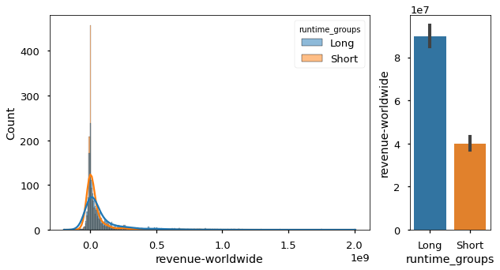
H0: Long and short movies have the same revenue.
H1: Long and short movies have different revenue.
Groups: Long/Short
Measure: Worldwide Revenue
Ideal test:
long = df.groupby('runtime_groups').get_group('Long')
sg.plot_distribution(long, 'revenue-worldwide');
/opt/anaconda3/envs/learn-env-new/lib/python3.8/site-packages/seaborn/_decorators.py:36: FutureWarning: Pass the following variable as a keyword arg: x. From version 0.12, the only valid positional argument will be `data`, and passing other arguments without an explicit keyword will result in an error or misinterpretation.
warnings.warn(
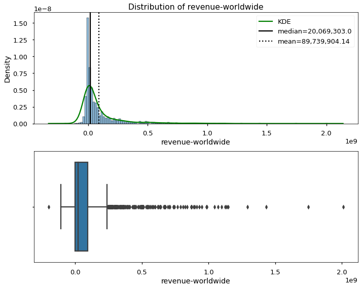
[i] Distribution Stats:
Skew = 3.82
Kurtosis = 20.71
N = 1,435
NormaltestResult(statistic=1190.9012822563436, pvalue=2.506526567949592e-259)
- p<.05: The distribution is NOT normally distributed.
short = df.groupby('runtime_groups').get_group('Short')
sg.plot_distribution(short, 'revenue-worldwide');
/opt/anaconda3/envs/learn-env-new/lib/python3.8/site-packages/seaborn/_decorators.py:36: FutureWarning: Pass the following variable as a keyword arg: x. From version 0.12, the only valid positional argument will be `data`, and passing other arguments without an explicit keyword will result in an error or misinterpretation.
warnings.warn(
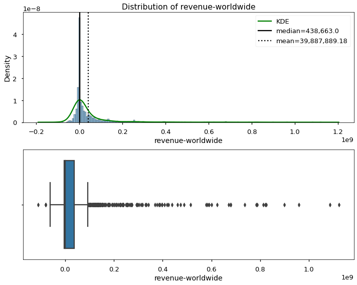
[i] Distribution Stats:
Skew = 4.8
Kurtosis = 29.04
N = 1,353
NormaltestResult(statistic=1334.9196425792106, pvalue=1.3362346269475206e-290)
- p<.05: The distribution is NOT normally distributed.
stats.levene(long['revenue-worldwide'],short['revenue-worldwide'])
LeveneResult(statistic=67.88087529176774, pvalue=2.6402405246562505e-16)
stats.ttest_ind(long['revenue-worldwide'],short['revenue-worldwide'],equal_var=False)
Ttest_indResult(statistic=8.495626170575216, pvalue=3.40810908881946e-17)
stats.mannwhitneyu(long['revenue-worldwide'],short['revenue-worldwide'])
MannwhitneyuResult(statistic=778633.5, pvalue=7.470485402923227e-20)
sg.Cohen_d(long['revenue-worldwide'], short['revenue-worldwide'])
0.3176134060453906
long['revenue-worldwide'].mean() - short['revenue-worldwide'].mean()
49852014.95747017
sns.lmplot(data=df, x='runtime_minutes',y='revenue-worldwide', hue='runtime_groups')
<seaborn.axisgrid.FacetGrid at 0x7fdb9f2ae130>
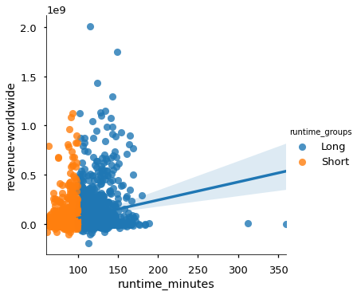
df[['revenue-worldwide','runtime_minutes','runtime_groups']].groupby('runtime_groups').corr()
| revenue-worldwide | runtime_minutes | ||
|---|---|---|---|
| runtime_groups | |||
| Long | revenue-worldwide | 1.000000 | 0.169340 |
| runtime_minutes | 0.169340 | 1.000000 | |
| Short | revenue-worldwide | 1.000000 | 0.065163 |
| runtime_minutes | 0.065163 | 1.000000 |
Q2 Are short run time movies more likely to lose money?#
Two categorical features
H0: Short and long movies have the same likiehood of losing money.
H1:Short and long movies have different’ likiehood of losing money.
Groups: Long/Short vs Lost/Gained money
Measure: group membership values
Ideal test: Chi-Squared
tab = pd.crosstab(df['runtime_groups'],df['lost_money'])
tab
| lost_money | False | True |
|---|---|---|
| runtime_groups | ||
| Long | 642 | 793 |
| Short | 484 | 869 |
chi2,p, dof, expected = stats.chi2_contingency(tab)
p
1.7214359148131321e-06
expected
array([[579.55882353, 855.44117647],
[546.44117647, 806.55882353]])
tab_perc = pd.crosstab(df['runtime_groups'],df['lost_money'],normalize=True)
tab_perc#.style.background_gradient()
| lost_money | False | True |
|---|---|---|
| runtime_groups | ||
| Long | 0.230273 | 0.284433 |
| Short | 0.173601 | 0.311693 |
results = df.groupby('runtime_groups')['lost_money'].value_counts(normalize=True)
results
runtime_groups lost_money
Long True 0.552613
False 0.447387
Short True 0.642276
False 0.357724
Name: lost_money, dtype: float64
odds,p = stats.fisher_exact(tab)
p
1.652824305508238e-06
Do movies released in some months earn more revenue than others?#
H0: There is no difference between roi depending on release_month.
H1:There is a difference between roi depending on release_month.
Groups: Months
Measure: roi-worldwide
Ideal test:
df.head()
| id | release_date | movie | production_budget | domestic_gross | worldwide_gross | tconst | primary_title | original_title | start_year | runtime_minutes | genres | revenue-domestic | revenue-worldwide | lost_money | roi-domestic | roi-worldwide | release_month | runtime_groups | |
|---|---|---|---|---|---|---|---|---|---|---|---|---|---|---|---|---|---|---|---|
| 0 | 2 | 2011-05-20 | Pirates of the Caribbean: On Stranger Tides | 410600000.0 | 241063875.0 | 1.045664e+09 | tt1298650 | Pirates of the Caribbean: On Stranger Tides | Pirates of the Caribbean: On Stranger Tides | 2011 | 136.0 | Action,Adventure,Fantasy | -169536125.0 | 6.350639e+08 | True | -41.289850 | 154.667286 | 5 | Long |
| 1 | 3 | 2019-06-07 | Dark Phoenix | 350000000.0 | 42762350.0 | 1.497624e+08 | tt6565702 | Dark Phoenix | Dark Phoenix | 2019 | 113.0 | Action,Adventure,Sci-Fi | -307237650.0 | -2.002376e+08 | True | -87.782186 | -57.210757 | 6 | Long |
| 2 | 4 | 2015-05-01 | Avengers: Age of Ultron | 330600000.0 | 459005868.0 | 1.403014e+09 | tt2395427 | Avengers: Age of Ultron | Avengers: Age of Ultron | 2015 | 141.0 | Action,Adventure,Sci-Fi | 128405868.0 | 1.072414e+09 | False | 38.840250 | 324.384139 | 5 | Long |
| 3 | 7 | 2018-04-27 | Avengers: Infinity War | 300000000.0 | 678815482.0 | 2.048134e+09 | tt4154756 | Avengers: Infinity War | Avengers: Infinity War | 2018 | 149.0 | Action,Adventure,Sci-Fi | 378815482.0 | 1.748134e+09 | False | 126.271827 | 582.711400 | 4 | Long |
| 4 | 9 | 2017-11-17 | Justice League | 300000000.0 | 229024295.0 | 6.559452e+08 | tt0974015 | Justice League | Justice League | 2017 | 120.0 | Action,Adventure,Fantasy | -70975705.0 | 3.559452e+08 | True | -23.658568 | 118.648403 | 11 | Long |
df = df_.copy()
new_cols = []
for col in df.columns:
new_cols.append(col.replace('-',"_"))
df.columns=new_cols
df
| id | release_date | movie | production_budget | domestic_gross | worldwide_gross | tconst | primary_title | original_title | start_year | runtime_minutes | genres | revenue_domestic | revenue_worldwide | lost_money | roi_domestic | roi_worldwide | release_month | |
|---|---|---|---|---|---|---|---|---|---|---|---|---|---|---|---|---|---|---|
| 0 | 2 | 2011-05-20 | Pirates of the Caribbean: On Stranger Tides | 410600000.0 | 241063875.0 | 1.045664e+09 | tt1298650 | Pirates of the Caribbean: On Stranger Tides | Pirates of the Caribbean: On Stranger Tides | 2011 | 136.0 | Action,Adventure,Fantasy | -169536125.0 | 6.350639e+08 | True | -41.289850 | 154.667286 | 5 |
| 1 | 3 | 2019-06-07 | Dark Phoenix | 350000000.0 | 42762350.0 | 1.497624e+08 | tt6565702 | Dark Phoenix | Dark Phoenix | 2019 | 113.0 | Action,Adventure,Sci-Fi | -307237650.0 | -2.002376e+08 | True | -87.782186 | -57.210757 | 6 |
| 2 | 4 | 2015-05-01 | Avengers: Age of Ultron | 330600000.0 | 459005868.0 | 1.403014e+09 | tt2395427 | Avengers: Age of Ultron | Avengers: Age of Ultron | 2015 | 141.0 | Action,Adventure,Sci-Fi | 128405868.0 | 1.072414e+09 | False | 38.840250 | 324.384139 | 5 |
| 3 | 7 | 2018-04-27 | Avengers: Infinity War | 300000000.0 | 678815482.0 | 2.048134e+09 | tt4154756 | Avengers: Infinity War | Avengers: Infinity War | 2018 | 149.0 | Action,Adventure,Sci-Fi | 378815482.0 | 1.748134e+09 | False | 126.271827 | 582.711400 | 4 |
| 4 | 9 | 2017-11-17 | Justice League | 300000000.0 | 229024295.0 | 6.559452e+08 | tt0974015 | Justice League | Justice League | 2017 | 120.0 | Action,Adventure,Fantasy | -70975705.0 | 3.559452e+08 | True | -23.658568 | 118.648403 | 11 |
| ... | ... | ... | ... | ... | ... | ... | ... | ... | ... | ... | ... | ... | ... | ... | ... | ... | ... | ... |
| 3462 | 67 | 2006-04-28 | Clean | 10000.0 | 138711.0 | 1.387110e+05 | tt6619196 | Clean | Clean | 2017 | 70.0 | Comedy,Drama,Horror | 128711.0 | 1.287110e+05 | False | 1287.110000 | 1287.110000 | 4 |
| 3463 | 68 | 2001-07-06 | Cure | 10000.0 | 94596.0 | 9.459600e+04 | tt1872026 | Cure | Cure | 2011 | 93.0 | Drama | 84596.0 | 8.459600e+04 | False | 845.960000 | 845.960000 | 7 |
| 3464 | 73 | 2012-01-13 | Newlyweds | 9000.0 | 4584.0 | 4.584000e+03 | tt1880418 | Newlyweds | Newlyweds | 2011 | 95.0 | Comedy,Drama | -4416.0 | -4.416000e+03 | True | -49.066667 | -49.066667 | 1 |
| 3465 | 78 | 2018-12-31 | Red 11 | 7000.0 | 0.0 | 0.000000e+00 | tt7837402 | Red 11 | Red 11 | 2019 | 77.0 | Horror,Sci-Fi,Thriller | -7000.0 | -7.000000e+03 | True | -100.000000 | -100.000000 | 12 |
| 3466 | 81 | 2015-09-29 | A Plague So Pleasant | 1400.0 | 0.0 | 0.000000e+00 | tt2107644 | A Plague So Pleasant | A Plague So Pleasant | 2013 | 76.0 | Drama,Horror,Thriller | -1400.0 | -1.400000e+03 | True | -100.000000 | -100.000000 | 9 |
3056 rows × 18 columns
import statsmodels.api as sm
from statsmodels.formula.api import ols
formula = "roi_worldwide~C(release_month)"
model= ols(formula, df).fit()
sns.barplot(data=df, x='release_month',y='roi_worldwide',ci=68)
<AxesSubplot:xlabel='release_month', ylabel='roi_worldwide'>
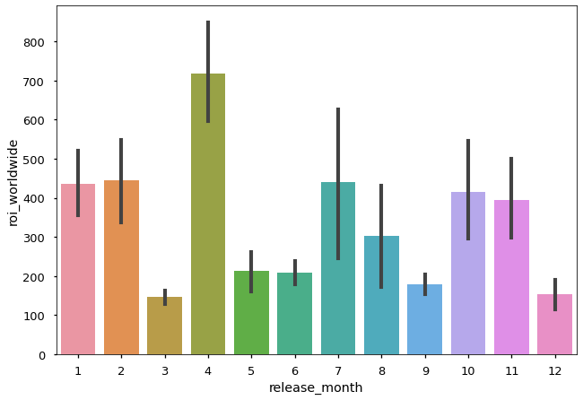
months = df.groupby('release_month').groups
for month in months:
months[month] = df.groupby('release_month').get_group(month)['roi_worldwide']
months[1]
172 269.713673
279 -50.685762
315 108.323185
435 305.921599
455 98.438521
...
3447 -86.862963
3448 -86.862963
3449 680.172000
3458 -100.000000
3464 -49.066667
Name: roi_worldwide, Length: 198, dtype: float64
for month, data in months.items():
data.name = str(month)
sg.plot_distribution(data)
/opt/anaconda3/envs/learn-env-new/lib/python3.8/site-packages/seaborn/_decorators.py:36: FutureWarning: Pass the following variable as a keyword arg: x. From version 0.12, the only valid positional argument will be `data`, and passing other arguments without an explicit keyword will result in an error or misinterpretation.
warnings.warn(
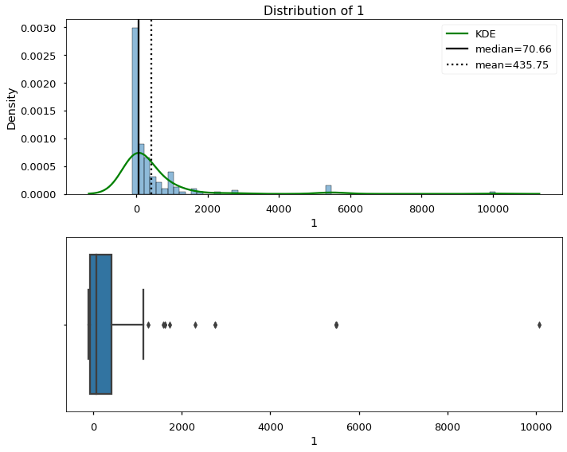
[i] Distribution Stats:
Skew = 4.92
Kurtosis = 29.51
N = 198
NormaltestResult(statistic=232.03863684720199, pvalue=4.106295644690384e-51)
- p<.05: The distribution is NOT normally distributed.
/opt/anaconda3/envs/learn-env-new/lib/python3.8/site-packages/seaborn/_decorators.py:36: FutureWarning: Pass the following variable as a keyword arg: x. From version 0.12, the only valid positional argument will be `data`, and passing other arguments without an explicit keyword will result in an error or misinterpretation.
warnings.warn(
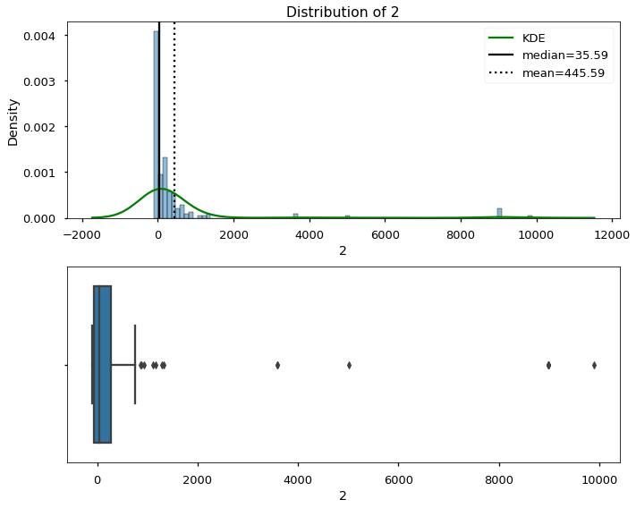
[i] Distribution Stats:
Skew = 4.92
Kurtosis = 24.07
N = 211
NormaltestResult(statistic=238.85211474630353, pvalue=1.3612010874549431e-52)
- p<.05: The distribution is NOT normally distributed.
/opt/anaconda3/envs/learn-env-new/lib/python3.8/site-packages/seaborn/_decorators.py:36: FutureWarning: Pass the following variable as a keyword arg: x. From version 0.12, the only valid positional argument will be `data`, and passing other arguments without an explicit keyword will result in an error or misinterpretation.
warnings.warn(
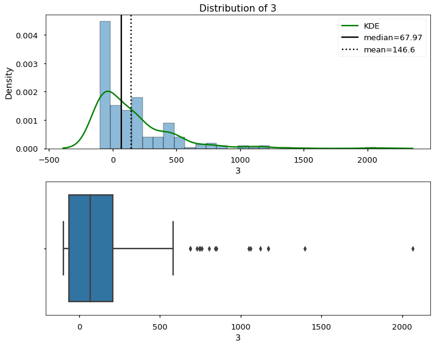
[i] Distribution Stats:
Skew = 2.33
Kurtosis = 8.48
N = 268
NormaltestResult(statistic=154.44140129743857, pvalue=2.9072060888998466e-34)
- p<.05: The distribution is NOT normally distributed.
/opt/anaconda3/envs/learn-env-new/lib/python3.8/site-packages/seaborn/_decorators.py:36: FutureWarning: Pass the following variable as a keyword arg: x. From version 0.12, the only valid positional argument will be `data`, and passing other arguments without an explicit keyword will result in an error or misinterpretation.
warnings.warn(
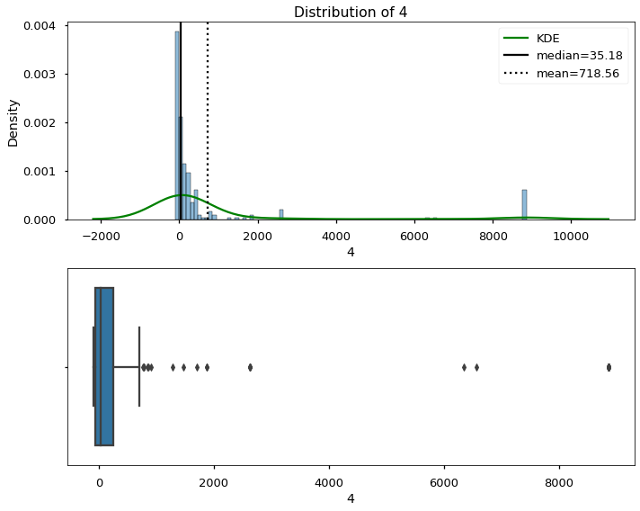
[i] Distribution Stats:
Skew = 3.35
Kurtosis = 9.78
N = 274
NormaltestResult(statistic=208.19021732532528, pvalue=6.1953909167240265e-46)
- p<.05: The distribution is NOT normally distributed.
/opt/anaconda3/envs/learn-env-new/lib/python3.8/site-packages/seaborn/_decorators.py:36: FutureWarning: Pass the following variable as a keyword arg: x. From version 0.12, the only valid positional argument will be `data`, and passing other arguments without an explicit keyword will result in an error or misinterpretation.
warnings.warn(
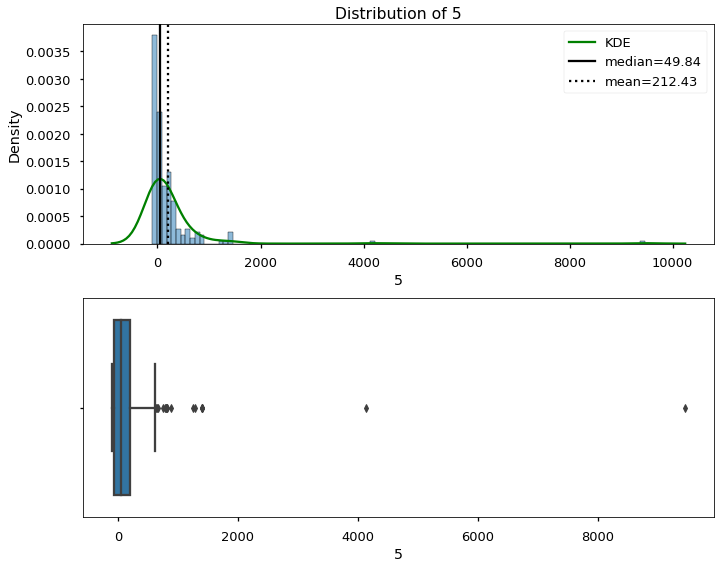
[i] Distribution Stats:
Skew = 9.41
Kurtosis = 107.43
N = 209
NormaltestResult(statistic=373.6273790130917, pvalue=7.376417734709555e-82)
- p<.05: The distribution is NOT normally distributed.
/opt/anaconda3/envs/learn-env-new/lib/python3.8/site-packages/seaborn/_decorators.py:36: FutureWarning: Pass the following variable as a keyword arg: x. From version 0.12, the only valid positional argument will be `data`, and passing other arguments without an explicit keyword will result in an error or misinterpretation.
warnings.warn(
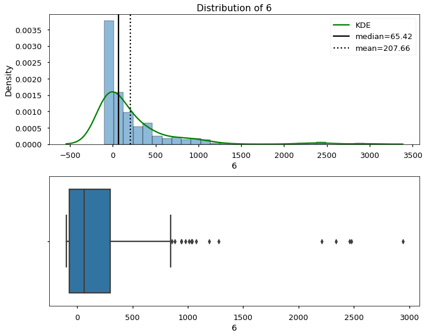
[i] Distribution Stats:
Skew = 3.15
Kurtosis = 12.99
N = 247
NormaltestResult(statistic=191.5040416282934, pvalue=2.6027096921227615e-42)
- p<.05: The distribution is NOT normally distributed.
/opt/anaconda3/envs/learn-env-new/lib/python3.8/site-packages/seaborn/_decorators.py:36: FutureWarning: Pass the following variable as a keyword arg: x. From version 0.12, the only valid positional argument will be `data`, and passing other arguments without an explicit keyword will result in an error or misinterpretation.
warnings.warn(
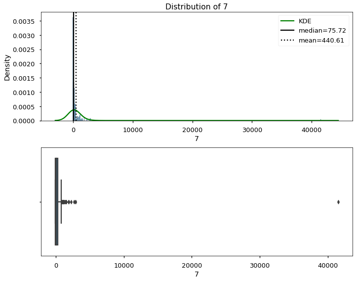
[i] Distribution Stats:
Skew = 14.01
Kurtosis = 202.63
N = 217
NormaltestResult(statistic=473.4686536427621, pvalue=1.5402392430749834e-103)
- p<.05: The distribution is NOT normally distributed.
/opt/anaconda3/envs/learn-env-new/lib/python3.8/site-packages/seaborn/_decorators.py:36: FutureWarning: Pass the following variable as a keyword arg: x. From version 0.12, the only valid positional argument will be `data`, and passing other arguments without an explicit keyword will result in an error or misinterpretation.
warnings.warn(
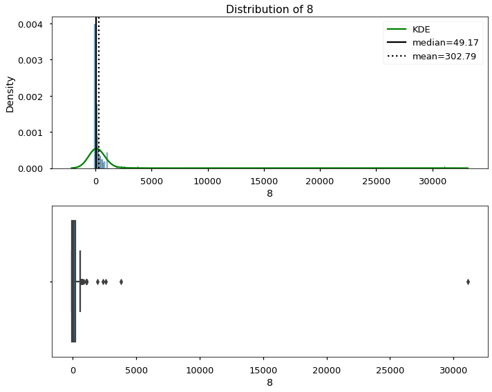
[i] Distribution Stats:
Skew = 14.63
Kurtosis = 222.95
N = 245
NormaltestResult(statistic=536.2702527718584, pvalue=3.5513559715483454e-117)
- p<.05: The distribution is NOT normally distributed.
/opt/anaconda3/envs/learn-env-new/lib/python3.8/site-packages/seaborn/_decorators.py:36: FutureWarning: Pass the following variable as a keyword arg: x. From version 0.12, the only valid positional argument will be `data`, and passing other arguments without an explicit keyword will result in an error or misinterpretation.
warnings.warn(
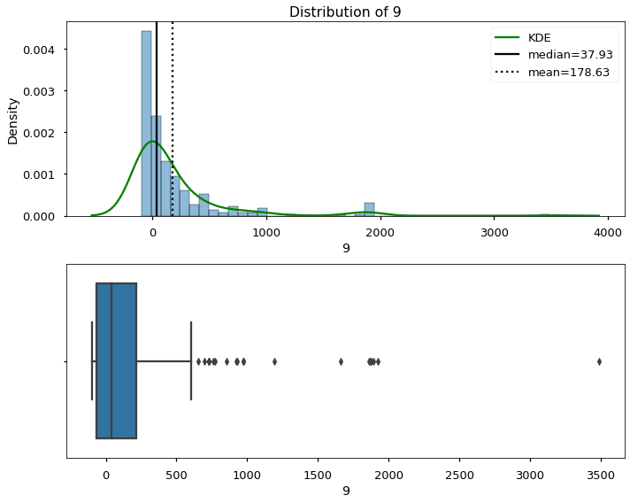
[i] Distribution Stats:
Skew = 3.52
Kurtosis = 16.12
N = 270
NormaltestResult(statistic=229.95465436872445, pvalue=1.1640757975276543e-50)
- p<.05: The distribution is NOT normally distributed.
/opt/anaconda3/envs/learn-env-new/lib/python3.8/site-packages/seaborn/_decorators.py:36: FutureWarning: Pass the following variable as a keyword arg: x. From version 0.12, the only valid positional argument will be `data`, and passing other arguments without an explicit keyword will result in an error or misinterpretation.
warnings.warn(
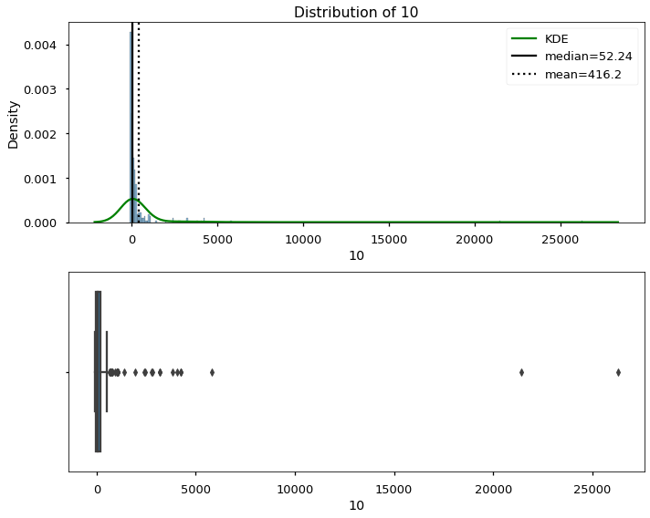
[i] Distribution Stats:
Skew = 10.1
Kurtosis = 112.44
N = 286
NormaltestResult(statistic=505.5148312402707, pvalue=1.6937493285363254e-110)
- p<.05: The distribution is NOT normally distributed.
/opt/anaconda3/envs/learn-env-new/lib/python3.8/site-packages/seaborn/_decorators.py:36: FutureWarning: Pass the following variable as a keyword arg: x. From version 0.12, the only valid positional argument will be `data`, and passing other arguments without an explicit keyword will result in an error or misinterpretation.
warnings.warn(
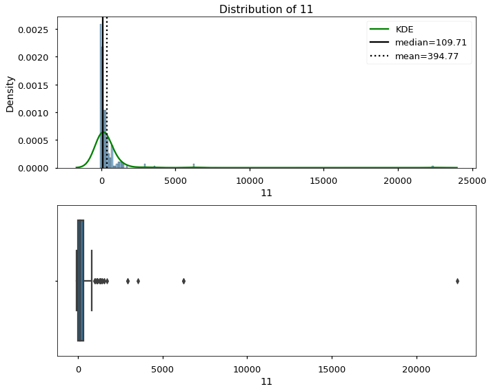
[i] Distribution Stats:
Skew = 11.55
Kurtosis = 155.0
N = 245
NormaltestResult(statistic=477.48229450195925, pvalue=2.0703184176541767e-104)
- p<.05: The distribution is NOT normally distributed.
/opt/anaconda3/envs/learn-env-new/lib/python3.8/site-packages/seaborn/_decorators.py:36: FutureWarning: Pass the following variable as a keyword arg: x. From version 0.12, the only valid positional argument will be `data`, and passing other arguments without an explicit keyword will result in an error or misinterpretation.
warnings.warn(
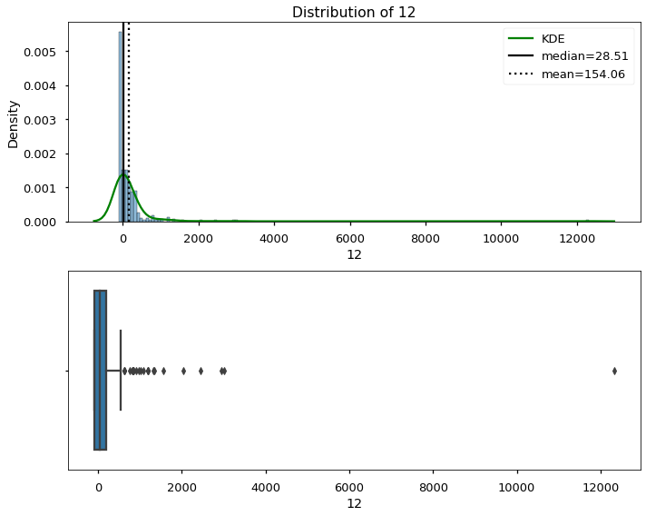
[i] Distribution Stats:
Skew = 13.0
Kurtosis = 210.98
N = 386
NormaltestResult(statistic=759.5904700219646, pvalue=1.1403159042787167e-165)
- p<.05: The distribution is NOT normally distributed.
data_list = [*months.values()]
data_list[0]
172 269.713673
279 -50.685762
315 108.323185
435 305.921599
455 98.438521
...
3447 -86.862963
3448 -86.862963
3449 680.172000
3458 -100.000000
3464 -49.066667
Name: 1, Length: 198, dtype: float64
stats.levene(*data_list)
LeveneResult(statistic=3.2519842465956192, pvalue=0.0001960119837824529)
stats.kruskal(*data_list)
KruskalResult(statistic=44.58863244702112, pvalue=5.730654139098781e-06)
sm.stats.anova_lm(model,robust='hc3')
| df | sum_sq | mean_sq | F | PR(>F) | |
|---|---|---|---|---|---|
| C(release_month) | 11.0 | 8.612399e+07 | 7.829453e+06 | 3.332126 | 0.00014 |
| Residual | 3044.0 | 7.152447e+09 | 2.349687e+06 | NaN | NaN |
from statsmodels.stats.multicomp import pairwise_tukeyhsd
results = pairwise_tukeyhsd(df['roi_worldwide'],df['release_month'])
results.summary()
| group1 | group2 | meandiff | p-adj | lower | upper | reject |
|---|---|---|---|---|---|---|
| 1 | 2 | 9.8373 | 0.9 | -486.2157 | 505.8903 | False |
| 1 | 3 | -289.1556 | 0.66 | -758.9774 | 180.6663 | False |
| 1 | 4 | 282.8101 | 0.6819 | -184.8209 | 750.4412 | False |
| 1 | 5 | -223.3229 | 0.9 | -720.5236 | 273.8778 | False |
| 1 | 6 | -228.0959 | 0.9 | -706.3285 | 250.1367 | False |
| 1 | 7 | 4.8556 | 0.9 | -487.8663 | 497.5775 | False |
| 1 | 8 | -132.9628 | 0.9 | -612.0631 | 346.1375 | False |
| 1 | 9 | -257.1278 | 0.7982 | -726.2097 | 211.9541 | False |
| 1 | 10 | -19.551 | 0.9 | -483.0485 | 443.9464 | False |
| 1 | 11 | -40.9823 | 0.9 | -520.0826 | 438.118 | False |
| 1 | 12 | -281.6882 | 0.604 | -719.9366 | 156.5603 | False |
| 2 | 3 | -298.9929 | 0.5933 | -760.4161 | 162.4302 | False |
| 2 | 4 | 272.9728 | 0.7031 | -186.2195 | 732.1651 | False |
| 2 | 5 | -233.1602 | 0.9 | -722.4324 | 256.112 | False |
| 2 | 6 | -237.9332 | 0.8842 | -707.9174 | 232.051 | False |
| 2 | 7 | -4.9817 | 0.9 | -489.7018 | 479.7384 | False |
| 2 | 8 | -142.8001 | 0.9 | -613.6673 | 328.067 | False |
| 2 | 9 | -266.9651 | 0.7338 | -727.6348 | 193.7046 | False |
| 2 | 10 | -29.3884 | 0.9 | -484.3704 | 425.5936 | False |
| 2 | 11 | -50.8196 | 0.9 | -521.6868 | 420.0475 | False |
| 2 | 12 | -291.5255 | 0.5292 | -720.7579 | 137.707 | False |
| 3 | 4 | 571.9657 | 0.001 | 141.2436 | 1002.6879 | True |
| 3 | 5 | 65.8327 | 0.9 | -396.8241 | 528.4894 | False |
| 3 | 6 | 61.0597 | 0.9 | -381.1497 | 503.2691 | False |
| 3 | 7 | 294.0112 | 0.6052 | -163.8289 | 751.8513 | False |
| 3 | 8 | 156.1928 | 0.9 | -286.9549 | 599.3405 | False |
| 3 | 9 | 32.0278 | 0.9 | -400.2691 | 464.3247 | False |
| 3 | 10 | 269.6045 | 0.625 | -156.6262 | 695.8352 | False |
| 3 | 11 | 248.1733 | 0.7738 | -194.9744 | 691.321 | False |
| 3 | 12 | 7.4674 | 0.9 | -391.1608 | 406.0957 | False |
| 4 | 5 | -506.133 | 0.0172 | -966.5649 | -45.7012 | True |
| 4 | 6 | -510.906 | 0.0082 | -950.7872 | -71.0249 | True |
| 4 | 7 | -277.9545 | 0.671 | -733.5463 | 177.6372 | False |
| 4 | 8 | -415.7729 | 0.0868 | -856.5973 | 25.0514 | False |
| 4 | 9 | -539.9379 | 0.0024 | -969.8529 | -110.023 | True |
| 4 | 10 | -302.3612 | 0.4564 | -726.1758 | 121.4535 | False |
| 4 | 11 | -323.7924 | 0.4082 | -764.6168 | 117.0319 | False |
| 4 | 12 | -564.4983 | 0.001 | -960.5422 | -168.4544 | True |
| 5 | 6 | -4.773 | 0.9 | -475.9684 | 466.4224 | False |
| 5 | 7 | 228.1785 | 0.9 | -257.7161 | 714.0731 | False |
| 5 | 8 | 90.3601 | 0.9 | -381.716 | 562.4362 | False |
| 5 | 9 | -33.8049 | 0.9 | -495.7102 | 428.1005 | False |
| 5 | 10 | 203.7719 | 0.9 | -252.4611 | 660.0049 | False |
| 5 | 11 | 182.3406 | 0.9 | -289.7355 | 654.4167 | False |
| 5 | 12 | -58.3653 | 0.9 | -488.9235 | 372.193 | False |
| 6 | 7 | 232.9515 | 0.8983 | -233.5155 | 699.4184 | False |
| 6 | 8 | 95.1331 | 0.9 | -356.9219 | 547.1881 | False |
| 6 | 9 | -29.0319 | 0.9 | -470.4551 | 412.3913 | False |
| 6 | 10 | 208.5448 | 0.9 | -226.9393 | 644.029 | False |
| 6 | 11 | 187.1136 | 0.9 | -264.9414 | 639.1686 | False |
| 6 | 12 | -53.5923 | 0.9 | -462.0997 | 354.9152 | False |
| 7 | 8 | -137.8184 | 0.9 | -605.175 | 329.5381 | False |
| 7 | 9 | -261.9834 | 0.7468 | -719.0642 | 195.0974 | False |
| 7 | 10 | -24.4067 | 0.9 | -475.7545 | 426.9412 | False |
| 7 | 11 | -45.8379 | 0.9 | -513.1945 | 421.5186 | False |
| 7 | 12 | -286.5438 | 0.5406 | -711.9221 | 138.8346 | False |
| 8 | 9 | -124.165 | 0.9 | -566.5281 | 318.1982 | False |
| 8 | 10 | 113.4118 | 0.9 | -323.0251 | 549.8487 | False |
| 8 | 11 | 91.9805 | 0.9 | -360.9924 | 544.9534 | False |
| 8 | 12 | -148.7253 | 0.9 | -558.2483 | 260.7976 | False |
| 9 | 10 | 237.5767 | 0.777 | -187.8382 | 662.9917 | False |
| 9 | 11 | 216.1455 | 0.9 | -226.2177 | 658.5086 | False |
| 9 | 12 | -24.5604 | 0.9 | -422.3163 | 373.1955 | False |
| 10 | 11 | -21.4313 | 0.9 | -457.8681 | 415.0056 | False |
| 10 | 12 | -262.1371 | 0.5477 | -653.2915 | 129.0173 | False |
| 11 | 12 | -240.7059 | 0.7168 | -650.2288 | 168.8171 | False |
# sm.stats.multipletests()
# results._results_table()
results.plot_simultaneous();
/opt/anaconda3/envs/learn-env-new/lib/python3.8/site-packages/statsmodels/sandbox/stats/multicomp.py:775: UserWarning: FixedFormatter should only be used together with FixedLocator
ax1.set_yticklabels(np.insert(self.groupsunique.astype(str), 0, ''))
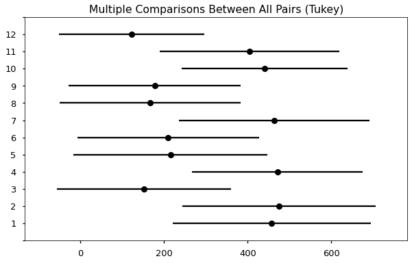